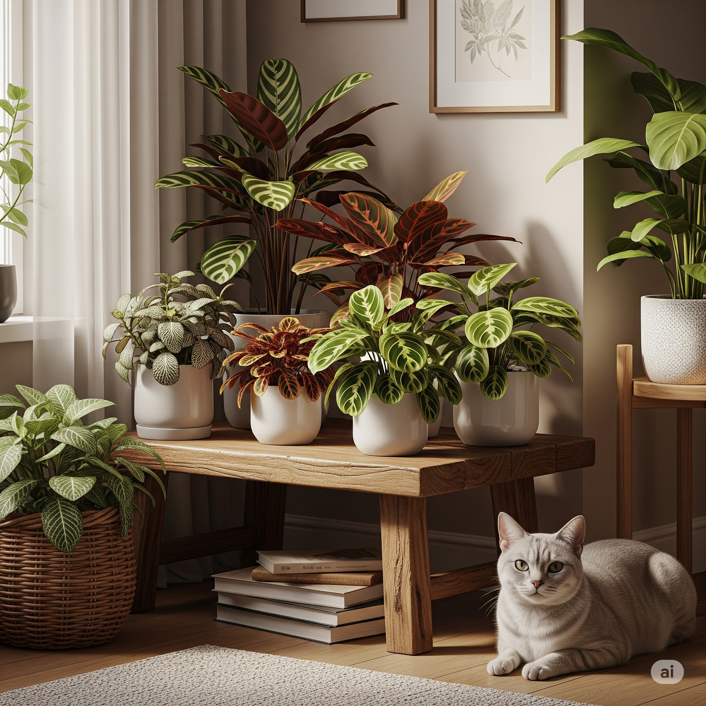

Guia das Plantas que Vivem com Pouca Luz e Convivem com Gatos

Sabe aquele ambiente que você resolveu aproveitar e era pouco explorado pela falta de uma janela? Escuro, sempre na penumbra. Nem todo ambiente interno recebe luz direta — e isso é mais comum do que parece. Todos têm um ambiente assim. Apartamentos com janelas pequenas, casas voltadas para o sul ou até banheiros e corredores são áreas com pouca incidência de sol. Nessas condições, muitas plantas comuns murcham, amarelam ou simplesmente não se desenvolvem. Felizmente, há espécies que não só toleram como preferem luz difusa ou sombra parcial, demonstrando uma notável capacidade de adaptação biológica.
E o melhor: algumas dessas plantas também são seguras para gatos, o que é essencial para quem vive com felinos curiosos. Se você ama um verde dentro de casa, mas quer evitar riscos para seu pet, esse guia é para você.
🌿 Plantas que gostam de sombra e não fazem mal ao seu gato: Uma Perspectiva Botânica
A capacidade dessas plantas de prosperar em ambientes com pouca luz está intrinsecamente ligada à sua fisiologia e evolução. Ao contrário das plantas que precisam de luz solar direta para a fotossíntese, as espécies de sombra desenvolveram mecanismos adaptativos. Elas possuem folhas com maior concentração de clorofila e outros pigmentos fotossintéticos, como carotenoides, que são mais eficientes na captação de fótons mesmo em baixa intensidade luminosa. Além disso, a estrutura de suas células foliares permite uma melhor distribuição e aproveitamento da luz difusa, minimizando a necessidade de exposição direta ao sol. Algumas delas também apresentam taxas metabólicas mais lentas, o que reduz sua demanda energética e, consequentemente, a necessidade de uma fotossíntese intensa.
Maranta (Maranta leuconeura): Conhecida por fechar as folhas à noite, um movimento nictinástico que otimiza a absorção de luz durante o dia e minimiza a perda de água à noite. É uma planta encantadora e segura. Veja o post-card da Maranta.
Calatéia (Calathea spp.): Uma das favoritas dos gateiros. Suas folhas estampadas iluminam qualquer canto escuro da casa. Sua capacidade de movimentar as folhas (nictinastia) também contribui para a eficiência na captação de luz. Conheça a Calatéia completa aqui.
Peperomia (Peperomia spp.): Compacta e versátil, a peperomia é ótima para estantes, mesas e prateleiras. Muitas espécies de Peperomia são suculentas, armazenando água em suas folhas, o que as torna mais resilientes a condições variadas, incluindo baixa luminosidade. Veja a ficha da Peperomia Melancia.
Fitônia (Fittonia albivenis): Pequena e colorida, perfeita para terrários ou vasos em banheiros. Suas folhas com nervuras contrastantes são uma adaptação para maximizar a área de captação de luz em ambientes sombrios. Conheça a Fitônia no post-card.
Pilea (Pilea peperomioides): Charmosa e popular, adora luz indireta. Também conhecida como “planta da amizade”, suas folhas redondas e planas são eficientes na captação de luz difusa.Conheça a Pilea no post-card.
💡 Dica Botânica: Mesmo plantas de \"pouca luz\" precisam de alguma claridade para realizar a fotossíntese, processo vital para sua sobrevivência. Ambientes com janelas filtradas por cortina, iluminação difusa ou luz artificial suave são o ideal. A ausência total de luz por longos períodos pode levar ao estiolamento (crescimento alongado e fraco em busca de luz) e eventual declínio da planta.
📚 Quer aprender mais?
Se você está começando a montar um ambiente verde dentro de casa, vale muito a pena se aprofundar. Aqui vão algumas sugestões de leitura que podem te ajudar nessa jornada — e todos os livros são seguros para quem tem gatos por perto:
- 🌱 Como Não Matar Suas Plantas: Ideal para iniciantes, aborda os fundamentos da botânica aplicada ao cultivo doméstico.
- 🌿 Minhas Plantas – Carol Costa: Leitura leve e cheia de dicas práticas, com informações sobre as necessidades específicas de cada espécie.
- 📖 A Planta Certa para o Lugar Certo: Perfeito para entender como adaptar cada planta ao seu ambiente, considerando fatores como luz, umidade e temperatura.
Com as espécies certas, um pouquinho de cuidado e muito amor, é totalmente possível criar um refúgio verde em casa — seguro, acolhedor e cheio de vida para você e seu gato.
← Voltar para o blog